A pipeline that turns the NSQIP files into a finished analysis
Most of the work in a database study is not the analysis. It is turning a vague idea into an answerable question, finding out whether the data can answer it, and then rebuilding the whole thing when a variable turns out to be missing in 2014. This is the machinery I built so that stops being the work.
What it is made of
Nineteen Python modules, plus 247 lines of zsh that install the kit and put a double-clickable launcher in the project folder.
| Component | Lines | What it does |
|---|---|---|
| Question builder | 555 | From no idea to one specific, feasible question |
| Suggestion library | 622 | Procedure and diagnosis presets, variables, outcomes, analyses; CPT short descriptors spelled back out |
| Catalog | 102 | Counts every primary CPT code in every year — no patient rows |
| Cohort extractor | 805 | Builds every requested cohort from the raw fixed-width files, one pass per year |
| Pipeline | 1,681 | The run itself, end to end |
| Workbook writers | 1,741 | The analysis workbook, its sheets, and the named functions pre-installed into it |
| Statistics and figures | 627 | The statistics mirror and the 300 dpi figures |
| Study designs | 365 | Multi-arm comparisons and gradients; single-cohort studies where the outcome is the question |
| Guides and slides | 932 | A written guide and a methods deck per project, plus guides for the pre-pipeline projects |
| Interfaces | 725 | The same questions, in a terminal or by clicking in Chrome |
| Maintenance | 275 | Rebuild everything; restyle an existing sheet in place |
How a project runs
One command, and the questions do the rest. Nothing is read from the patient files until the question is settled.
- Ask. The builder reads the catalog’s case and event counts and narrows a vague idea to one question, with the numbers that say whether it is answerable.
- Extract. Each yearly file is read once in chunks and every requested project takes its rows from the same pass. The originals are never modified.
- Build. A workbook is written in which every cell outside the data sheet is a formula reading named ranges — so the Settings sheet, not a rerun, changes the cohort.
- Draw. Figures come out at 300 dpi, greyscale, one message each, with the numbers printed beside the marks.
- Explain. Each project ends with an HTML guide to its own workbook and a methods deck written for that project’s codes, exclusions and analyses.
Answers are the artefact
Every answer given to the builder is written to the project as it is given, which makes the run repeatable without the person who ran it.
- A saved answer file rebuilds the whole project with no questions asked.
- Re-asking the questions starts from the previous answers, so an amendment is an edit rather than a retype.
- A replay walks today’s questions using an old project’s answers into a copy, so a pipeline change can be inspected against the original before anything replaces it.
- One command rebuilds every project to the current pipeline, backing up first and restoring on failure; published Google Sheets are left alone unless asked.
What a project looks like when it is done
Every study built this way ships the same four things: a workbook where each number is a formula, a figure set drawn from that workbook, a methodology deck that explains the design to someone who has never used NSQIP, and a Start Here guide. Nothing below was hand-assembled — the pipeline wrote all of it.
The workbook is the source of truth
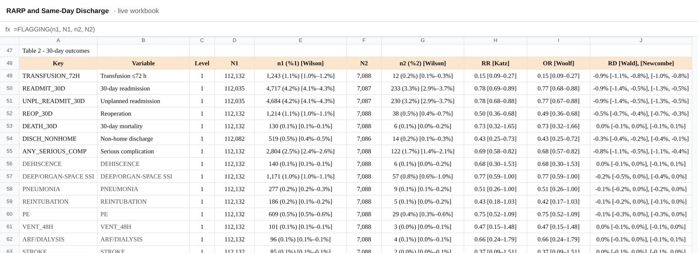
Figures are drawn from it, not typed into it
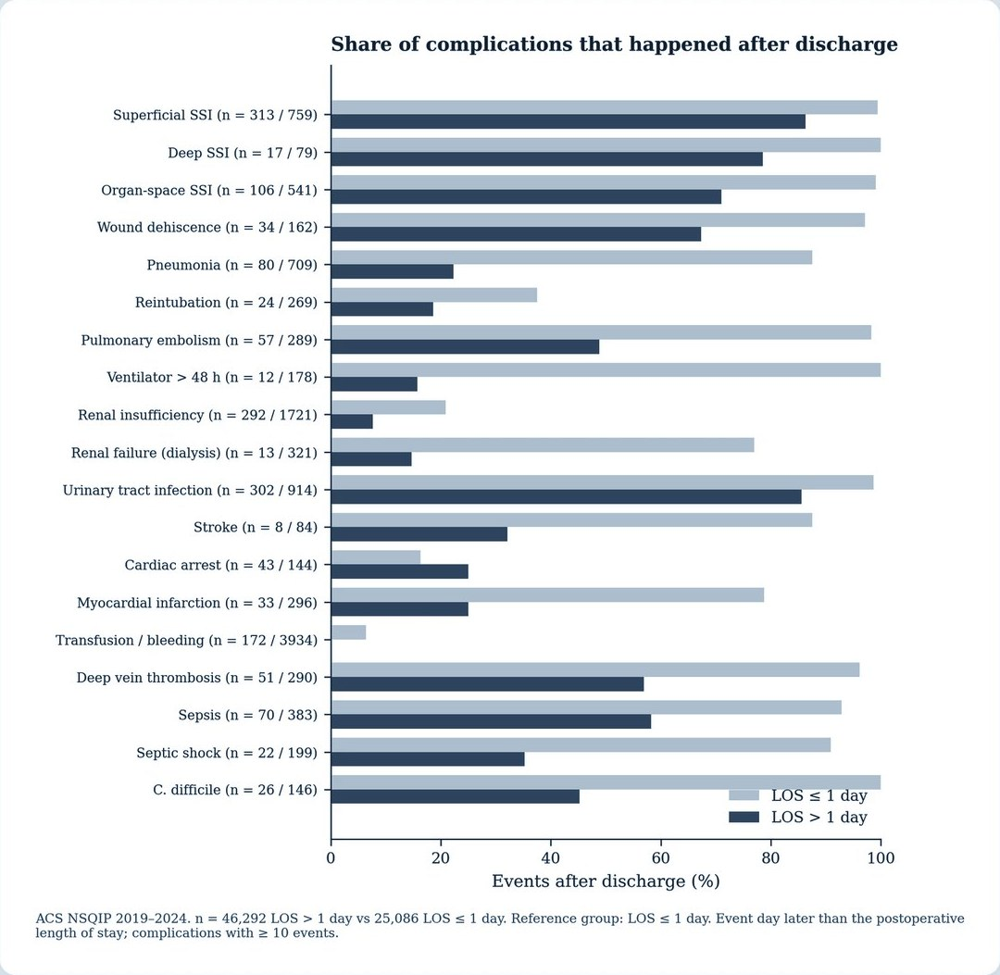
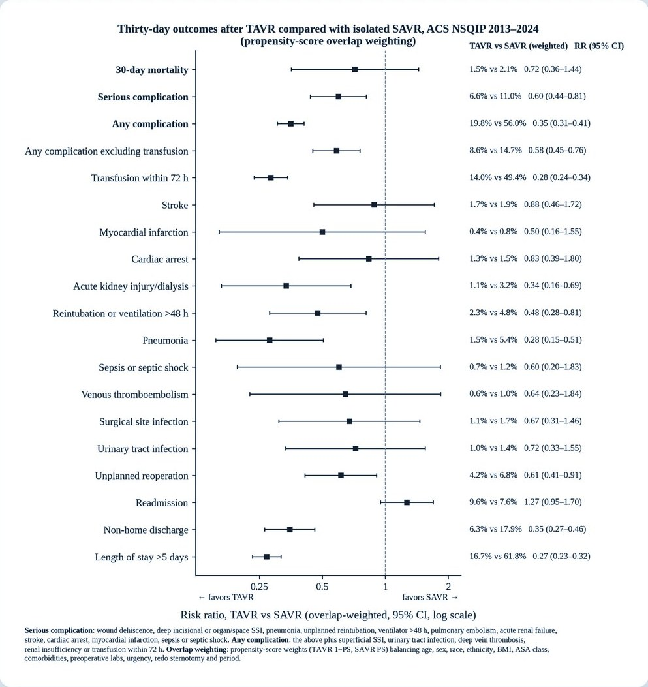
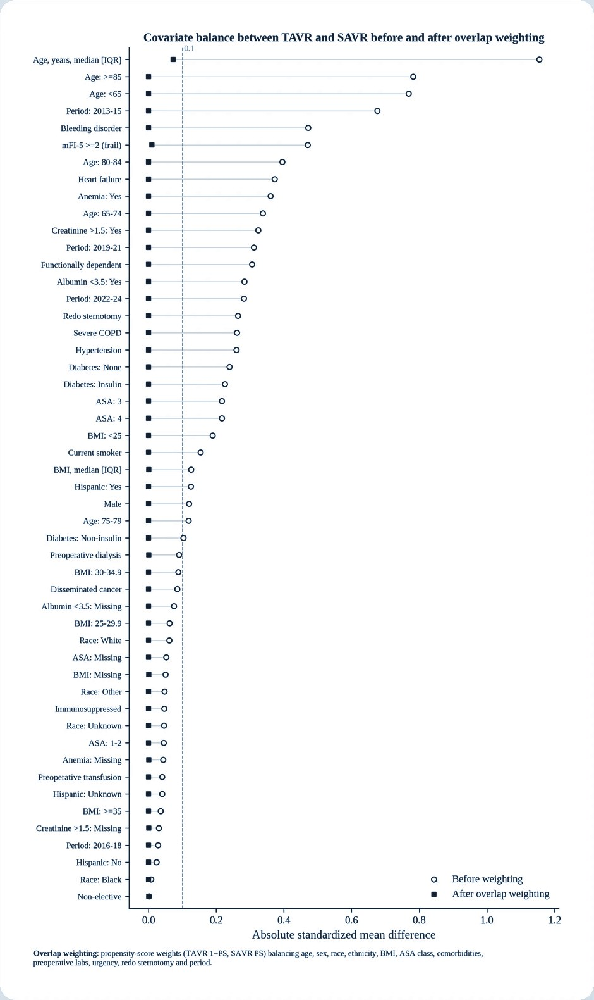
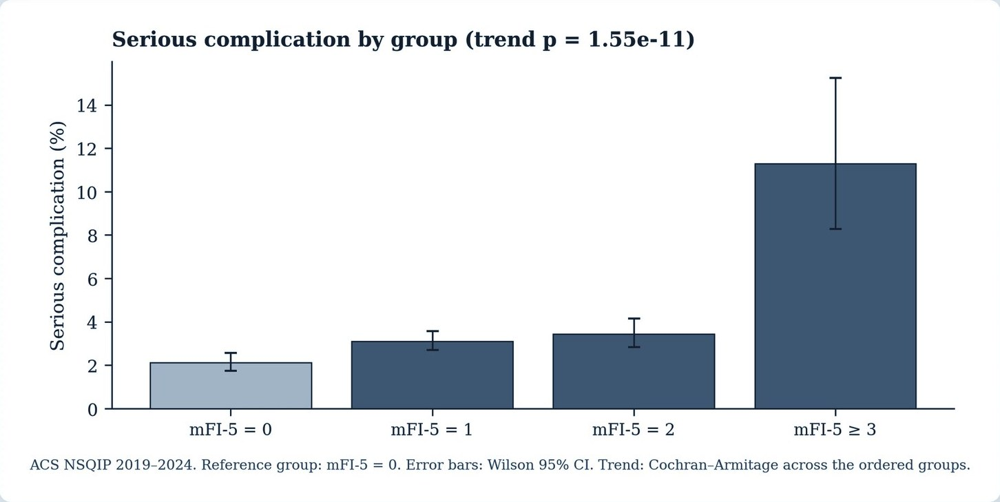
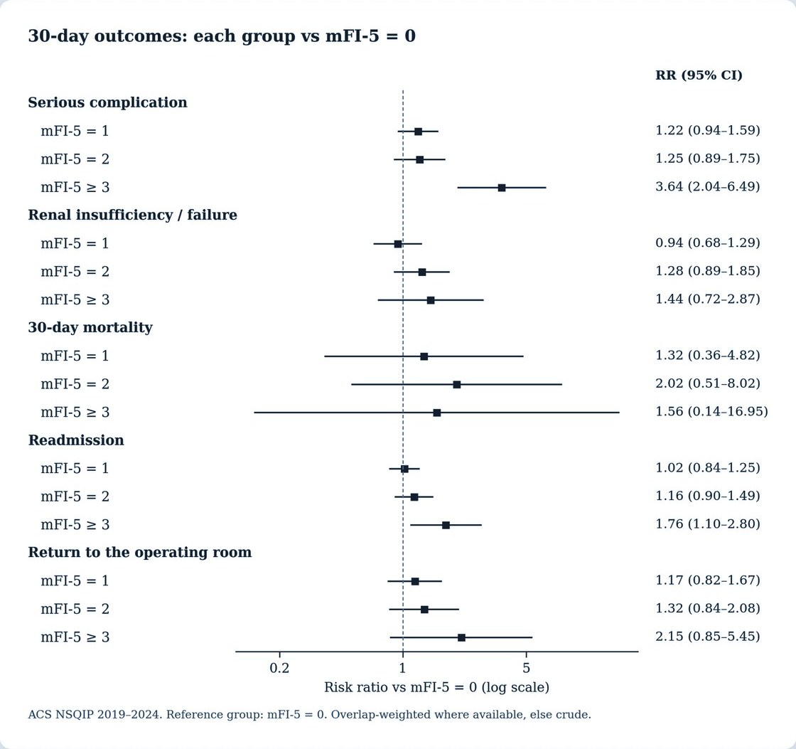
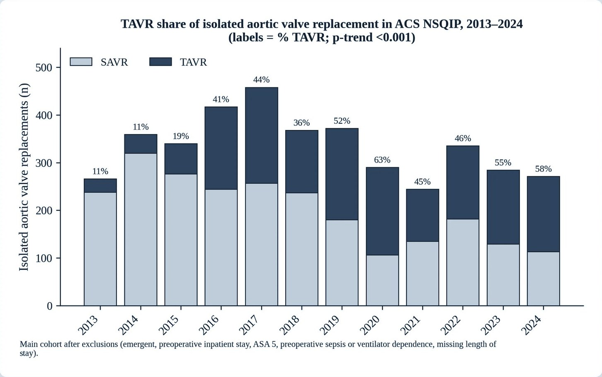
A deck that explains the method
The deck is generated with the project, so it cannot drift from it. It carries the cohort funnel, the covariate list, the outcome definitions and the equations behind every interval — which is what a co-author or a reviewer actually asks for.
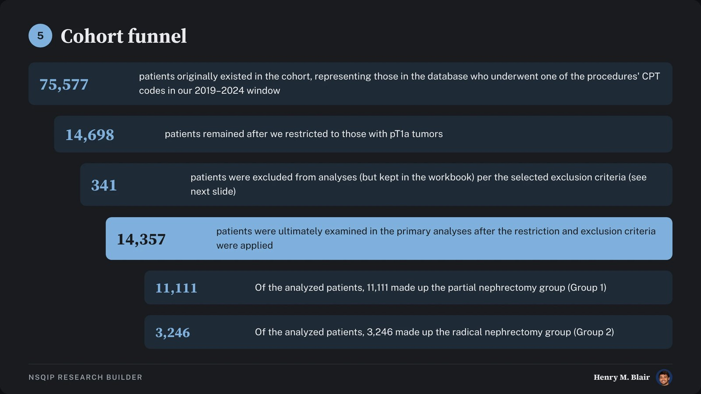
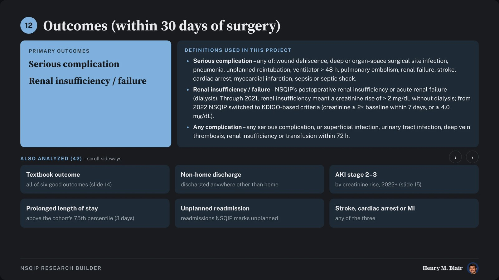
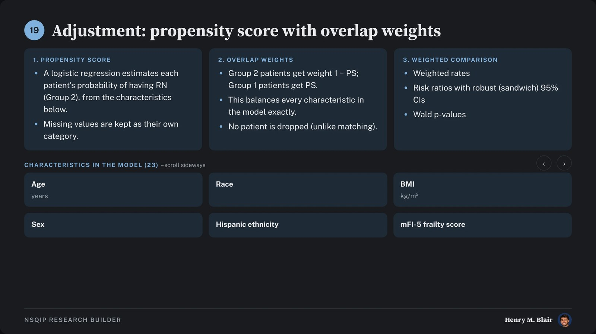
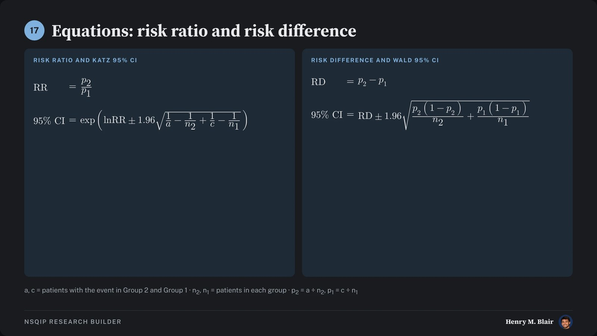
And a guide for whoever picks it up next
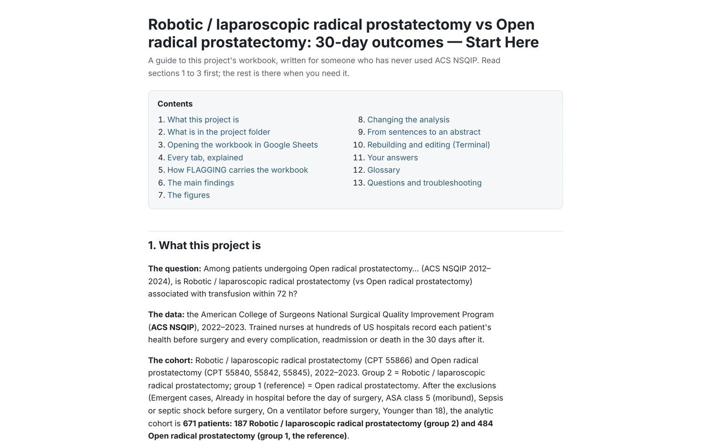
Statistics as spreadsheet formulas
A workbook of pasted results goes stale the moment the cohort changes. A workbook of formulas cannot.
- Wilson score intervals for every proportion, rather than the normal approximation that misbehaves at the small denominators subgroup analysis produces
- Fisher’s exact test, with chi-squared where that is appropriate
- Katz confidence intervals for risk ratios
- Propensity-matched comparison flags carrying the hazard ratio, its interval and the proportional-hazards p
- Formatting functions so counts, percentages, odds ratios and p-values read the same way in every table
Data handling
The NSQIP Participant Use Files are governed by a data-use agreement. The raw files, the derived cohorts and the workbook sheet holding patient-level rows stay on approved machines and are never published, shared or committed. Nothing on this page, and no figure anywhere on this site, contains patient-level data.
The question
Can the distance between a half-formed research question and a defensible, reproducible analysis be made short enough that the question is the hard part again?
How it is being done
- Ask first, extract second. A question builder walks from “no idea yet” to one specific, feasible question, checked against what the data actually contains, before a single patient row is read.
- A catalog with no patients in it. Every primary CPT code in every year is counted up front, so feasibility is judged from counts alone.
- One map across twelve years. 397 columns are tracked year by year, which is what makes a 2012–2023 cohort possible at all — the files do not agree with each other about what they contain.
- Statistics that stay live. Rather than pasting numbers, each workbook carries fourteen custom spreadsheet functions. Change the cohort and every result recalculates in place.
- Figures and a guide, built with it. Each project ends with 300 dpi greyscale figures and an HTML guide explaining how to read its own workbook.
- Rebuild without fear. One command brings every project up to the current pipeline, backing up first and restoring on failure.
What comes next
Extending the same approach to the other national datasets these projects draw on, so a question asked of one can be asked of another without rebuilding the machinery.